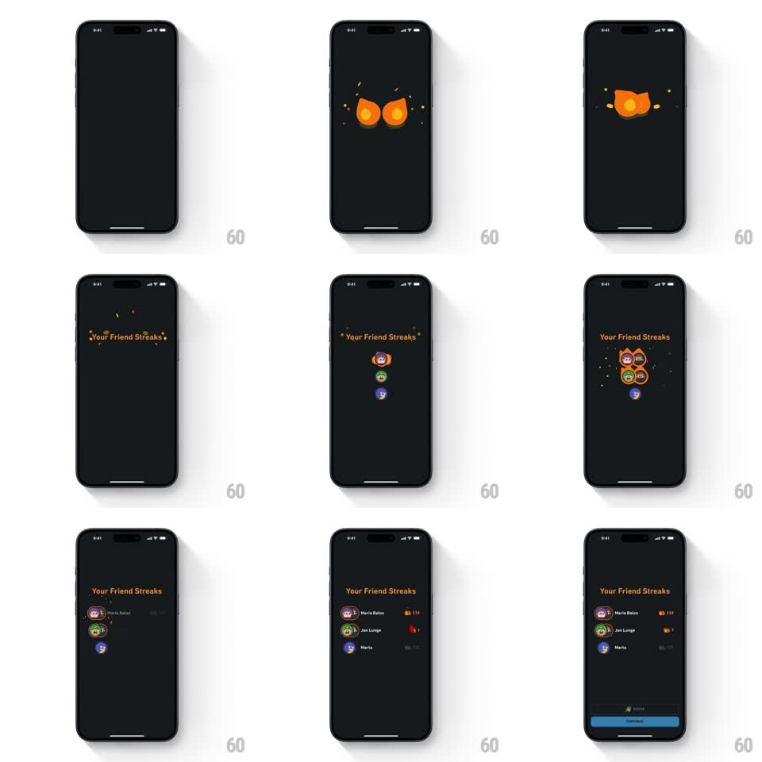

Media
Frame-by-frame

Rebuild this animation 1:1: Duolingo's friend streaks reveal - two flames bump together and fuse, "Your Friend Streaks" sparks in, friend avatars pop into a cluster, and the list expands row by row with streak counts.

Rebuild this animation 1:1: Duolingo's friend streaks reveal - two flames bump together and fuse, "Your Friend Streaks" sparks in, friend avatars pop into a cluster, and the list expands row by row with streak counts. ## Integration Integration: stack-agnostic spec - springs given as stiffness/damping, timed motions as duration + curve; map every value to your framework and animation library of choice. ## Scene A near-black screen. Two Duolingo flame blobs (orange) with spark particles, the title "Your Friend Streaks", a cluster of circular friend avatars (some ringed with flame and streak counts like 134, 7), then a list of friend rows (avatar, name, streak flame and count, or a red flame for at-risk streaks), and an invite button at the bottom. ## Motion spec Pattern: flame fusion to staggered list, ~3s. - Two flames drift in from opposite sides (500ms, ease-out) and bump at center, fusing into one larger flame with a spark burst (particles, 300ms). - "Your Friend Streaks" fades in above the flame (300ms), ringed by tiny floating sparkles. - Friend avatars pop in below the flame one by one (spring stiffness 400 damping 17, 120ms stagger), flame rings drawing around the active-streak friends. - The cluster then expands into the full list: rows stretch out (300ms), names and streak counts fading in per row (80ms stagger), the at-risk row's flame tinting red. - The invite bar slides up at the bottom (250ms). ## Calibration - The bump has a squash on contact - the flames are soft bodies, not icons sliding together. - The cluster-to-list expansion keeps avatars continuous: each circle travels from cluster position to its row's leading slot. ## Reduced motion Title and list fade in complete. ## Don't miss - At-risk streaks read instantly: red flame, no ring. - The top friend's flame ring burns with a small animated flicker after landing.